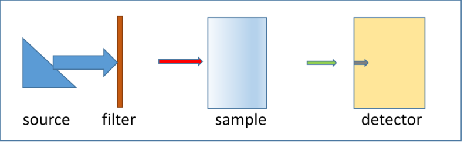
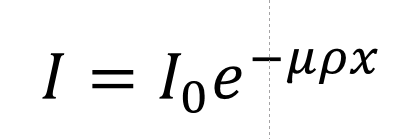
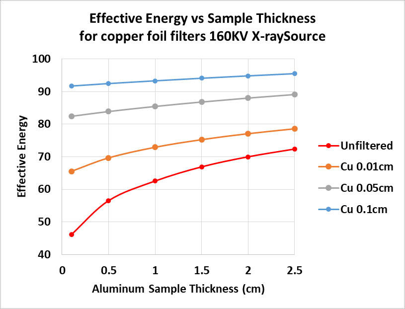

Scanner Setup is a 1-D attenuation model that displays x-ray intensity distributions at important points along the ray path. The plugin provides a non-modal dialog to aid in selecting optimal CT scanner operating conditions to improve signal-to-noise and reduce beam hardening artifact.

Schematic of a typical radiography/tomography experimental setup
The above figure shows a schematic of a simple radiography or CT scanner. The arrow widths indicate spectral width and the length indicates intensity.
What is Beam Hardening?
Beam hardening is the shifting of the broad spectrum of a conventional x-ray source toward higher average (hard) energies as it passes through a material. Lower energy (longer wavelength) X-rays are preferentially attenuated leaving the higher energy, more penetrating X-rays for detection. It is mostly evident in the photoelectric energy range where the attenuation of materials changes rapidly with photon energy. The plot below illustrates this energy shift (plotted as wavelength for dramatic effect) caused by the beam passing through different thicknesses of copper.
Source intensity distribution with copper filters
When measuring attenuation of a specimen using a conventional bremsstrahlung x-ray source, we first measure the incident beam intensity "I0". Then we put a specimen in the beam and repeat the measurement "I ". We know the thickness of the specimen so we can calculate the linear attenuation μρ using the equation.

With μρ in hand and if we know the the specimen's composition we can look-up the "Effective" x-ray energy of the incident x-ray beam.
Definition: The Effective Energy is the monochromatic x-ray energy that will produce the same attenuation as that measured with a given polychromatic x-ray energy distribution.
But the distribution is changing as it passes through the specimen! So we try again with a thinner specimen and sure enough, we get a different effective energy. The plot below shows the use of different thickness copper filters to remove a portion of the low-energy (soft) x-rays incident on different thickness aluminum specimens. Unfiltered(red), the effective energy changes from about 45keV in the 0.01cm specimen to 72keV for the 2.5cm thick one. By removing the soft x-rays from the incident beam with a 0.1cm copper filter the average energy shifts to about 90keV and remains nearly constant for all thicknesses of of aluminum.

Pre-hardening using filters
Why is Beam Hardening Important?
Beam Hardening results in an over-estimate of attenuation by shorter paths through the specimen. It produces the well-known cupping and streak artifacts in reconstructed tomographic images. Cupping makes the image brighter at the thinner edges, streaks appear as brighter regions between more x-ray absorbing higher atomic number features in the specimen(streaks can also be caused by non-linear detector response).
Cupping Artifact in a Simulated Sandstone Calcite cement Z contrast is not sufficient to cause detectable streaks.
What can be done to reduce Beam Hardening?
Apart from absorption edges, beam hardening is always present, lower energy x-rays are more strongly absorbed. But we can reduce the effect, hopefully below detection, by experimental technique and post-processing.
Pre-harden the X-ray beam using a filter, usually a metal foil, located at the X-ray source. This can result in a substantial loss of x-ray intensity. If not already at maximum, the x-ray source current can be increased to offset the loss. Occasionally the accelerating potential of the X-ray source is increased to offset the decreased intensity caused by the filter absorbance. This is usually not a good idea. It raises the effective energy and lowers the sample attenuation an may result in additional noise in reconstructed slices.
Apply a correction to the observed attenuations so that a plot of attenuation vs sample thickness becomes linear. The linearization function is usually a polynomial that is determined, depending on the information being sought, either by simply observing the quality of the corrected images or by careful calibration. Linearization is most successful when the sample is relatively homogeneous, i.e. when all rays passing through the sample see about the same average composition. We will discuss linearization here. After correction by linearization the reconstructed image linear attenuations will be at a single effective energy. When samples are not relatively homogeneous, more advanced methods beyond the current scope of my plugins are required.
The ImageJ plugin
The Scanner Setup plugin helps to fine-tune the pre-hardening technique. It guides selection of the operating conditions that will give good contrast and accurate attenuation measurements for your sample. It provides an interactive way to minimize the severity of beam hardening. Scanner Setup is not a predictor of scanner performance. The x-ray source intensity is calculated using the Kramers equation and neglects characteristic emission lines and source configuration. The detector is "ideal" in that it returns at each energy the fraction of counts absorbed by the scintillator screen. Energy dependent fluorescent yield, collection efficiency, gain and other characteristics of real detectors are neglected.
The User Interface
ImageJ Plugin CT Scanner Setup, Initial
Target - The anode material of a conventional X-ray source.
KV - The accelerating potential of a conventional X-ray source.
ma - The beam current of a conventional X-ray source.
Filter Material - Usually a metal foil placed just downstream of the X-ray source.
Filter Thickness(cm) - The thickness of the filter in centimeters.
Sample Name Filter - Clips the choices to those beginning with the characters in this textbox. Clear to restore the full list.
Sample Name Choices -Pick a material from this list imported from DefaultMaterials.csv in the plugins/DialogData folder.
Sample Formula - Pre-populated from the name choice. Edit to change the formula.
Sample Thickness(cm) - Pre-populated from the name choice. Edit to change the formula.
Sample Density(gm/cc) - Pre-populated from the name choice. Edit to change the formula.
Detector Name Filter - Clips the choices to those beginning with the characters in this textbox. Clear to restore the full list.
Detector Name Choices -Pick a material from this list.
Detector Formula - Pre-populated from the name choice. Edit to change the formula.
Detector Thickness(cm) - Pre-populated from the name choice. Edit to change the formula.
Detector Density(gm/cc) - Pre-populated from the name choice. Edit to change the formula.
Plot Minimum(keV) - Sets the X-ray Spectra plot minimum energy. The maximum energy is the accelerating potential(KV).
Plot Inc(keV - Sets the energy step size for the polychromatic scan. Large steps go faster. Small steps have better spectral resolution.
keV Angstroms Buttons - Selects the plot x-axis scale
Update Plot - Recalculate the plots and results.
OK - Recalculate, update and exit leaving plot and results windows open
Cancel - Exit closing plots and results windows.
Help - Brings up this page.
Example
Step 1, Initial setup
Using the pull-down formulas menu or manual entry:
Configure the X-ray source and detector. The detector is "ideal", modeled by counting photons absorbed by a screen of the user-supplied composition, thickness, and density. The detector configuration can significantly alter the high-energy x-ray response. Real detectors vary considerably in design, construction and response. Therefore, I make no attempt to model photon yield, collection efficiency, amplification, digitization etc.
Replace the Sample values with your sample's average composition and density. The formula is entered as atom1:count1:atom2:count2....
Click the Update Plot to create/update the three results windows(right).
The top plot shows the relationship between sample thickness and attenuation. It should look like a nearly straight line if the incident photon beam is approximately monochromatic.
The middle plot shows intensity vs X-ray energy at five sampling points along the beam path.
Blue, the source spectrum.
Red, the source spectrum after the filter.
Green, the source spectrum after the filter and sample.
Gray, source spectrum after the filter detected. "Io"
Black, the source spectrum after the filter and sample detected. "I"
The window at the bottom shows the results for each trial configuration.
Step 2, Evaluating the initial set-up
In the BH Workbench Results window:
The sample attenuation S Tau, the product of μρx, is 2.58, it has been shown that it should be ≅ 2 to obtain the best S/N in the shortest amount of time.
The beam hardening BH% is 28%, ideally it should be <10%.
The "Photon Use", the percent of the number of source counts measured by the detector, is 15.4%
Moving down stream and looking at the X-ray Spectra we see:
The source(blue) emits a broad spectrum of photons from just below 160 KeV, peaking at 80KeV and falling off at lower energies.
The filter(red) reduces the low energies but still transmits a large fraction of photons below 50 KeV.
The detected filter spectrum(gray) is heavily low-energy weighted due to poor detector performance at high energies. Most of the high energy x-rays pass directly through the 0.01cm thick Cesium Iodide scintillator. Note that the detected filter spectrum contains features from the detector's Cesium and Iodine absorbance edge jumps.
The sample(green) does not transmit any of the filtered photons less than 50KeV.
The detected(black) sample spectrum has no photons less than 50KeV
Conclusion: The pre-hardening by a 0.01cm copper filter is not sufficient. When we measure the incident intensity without the sample in the beam Io we are counting many low energy photons that will be completely absorbed by the thicker portions of the specimen but will be transmitted by the thinner regions. This causes significant beam hardening as seen in the Attenuation vs Thickness curve. We need to increase the thickness of the filter to some optimal value.
Step 3, Optimization1
Add filter thickness and observe the changes in the curves. Removing the low energy X-rays will:
Raise the effective energy (Eeff in the results window).
Lower the sample attenuation. If reduced too far you may want to lower the Source KV
Reduce the beam hardening.
Reduce the photon use, increasing exposure time.
Achieving a proper balance between photon use and acceptable beam hardening often depends on the sample composition and structure, the effectiveness of post-acquisition beam hardening corrections, and the information to be obtained from the image.
ImageJ Plugin Beam Hardening Workbench, Final
Step 4, Evaluating the final set-up1
The sample attenuation is now 1.989
The beam hardening BH% is 7.4%
The "Photon Use", is 9.1%
The thin CsI scintillator is not a good choice. It is inefficient in the energy range transmitted by this sample.
1. My Excel Beam Hardening Add-in uses the Solver to maximize Photon Use% while constraining sample tau and beam hardening.